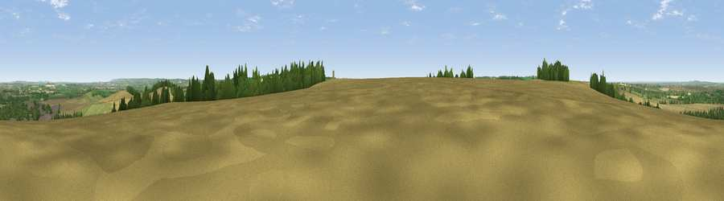

Viewpoint near Blewbury
#12908 in England · top 13% of its area beats it · near BlewburyThe view, rendered

A 360° render of this exact spot computed from the terrain model, tree cover and land cover — summer colours, afternoon light, calibrated against photographs of famous viewpoints. Real trees, hedges and buildings will differ in detail.
The panorama
Grey silhouette: terrain skyline in each direction (720 bearings, Earth curvature and refraction included). Dashed green: skyline with trees (+15 m) and buildings (+8 m) as obstacles. Blue strip: how far the ground is visible on each bearing.
Where the view opens
Wedge length = distance to the farthest visible ground on that bearing (vegetation-aware). Rings at 10, 25 and 50 km.
What fills the view
50% cropland · 32% grassland · 13% woodland · 4% built-up
Angular shares of the visible panorama (visual magnitude), not map area. Landscape diversity 0.48 (0–1 Shannon).
Key numbers
More beautiful places nearby
The staircase of upgrades: each row has a higher view potential than everything closer. Driving times are estimates from straight-line distance, calibrated against real road routing — check an actual route before setting out.
| Place | Direction | Drive | Score |
|---|---|---|---|
| Viewpoint near Blewbury | W · 1 km | ~2 min | 60.8 |
| Viewpoint near Compton | SSE · 2 km | ~6 min | 64.1 |
| Castle Hill | NNE · 9 km | ~18 min | 68.3 |
| Round Hill | NNE · 9 km | ~18 min | 70.1 |
| Viewpoint near Watlington | ENE · 19 km | ~33 min | 70.6 |
| Viewpoint near Lewknor | ENE · 21 km | ~36 min | 70.8 |
| Viewpoint near Woolstone | W · 23 km | ~37 min | 70.9 |
| Viewpoint near Woolstone | W · 23 km | ~38 min | 76.7 |
51.55667, -1.23655 · source: screening · position refined by local search. Computed location — check access rights before visiting.